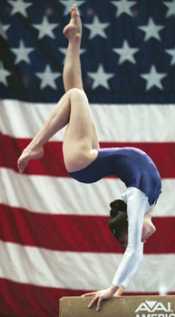

Kate Richardson (CAN)
2000 and 2004 Olympian
2002 Commonwealth Games AA Champion

Kate was born June 27, 1984, in Vancouver. She was coached by David Kentwright at the Abbotsford Twisters club.
Competition Results
1998
Avignon Jr. International: 9th AA
Jr. Canadian Championships: 1st AA
Jr. Wild Rose International: 2nd AA
China Motor Cup: 2nd AA
1999
Bluewater International: 2nd AA
Canadian Championships: 4th AA
Pan American Games: 1st Team
World Championships: 19th AA
2000
Bluewater International: 2nd AA
Canadian Championships: 4th AA
Olympic Games: 15th AA
2001
American Cup: 4th AA
Canadian Championships: 1st AA
World Championships: 16th AA
2002
Commonwealth Games: 3rd Team, 1st AA, 1st B
2003
NCAA Championships: 1st Team, 3rd AA, 1st UB, 1st B, 5th FX
2004
Canadian Championships: 5th AA
NCAA Championsips: 1st Team, 4th AA, 3rd UB, 9th V
Olympic Games: 18th AA, 6th FX
2005
NCAA Championships: 4th B, 12th FX
2006
NCAA Championships: 27th AA, 1st FX, 3rd V
This page was created on December
30, 2006.
© Gymn Forum